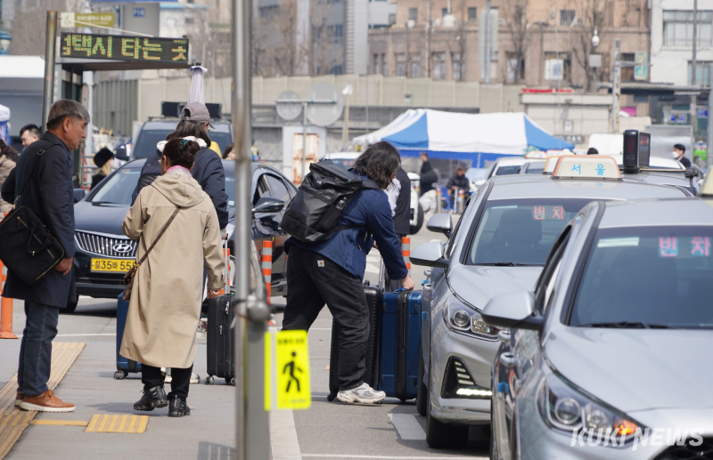

-
3000만명 시대 앞둔 K-관광…“올해 과제는 체류·소비 구조 바꾸기”
올해 한국 관광의 핵심 과제는 방한 관광객 수 확대를 넘어 관광수지와 소비 구조 개선이 될 것으로 보인다. 코로나19 이후 방한 관광은 빠르게 회복됐지만, 관광객 증가가 곧바로 국가 경제 성과로 이어지지는 않고 있다. 해외 여행에 따른 외화 유출이 더 빠르게 늘면서 관광산업의 수익성 개선이 제한되고 있기 때문이다.

-

은퇴자 몰리는 택시업계, ‘변종 사납금’에 일상된 과로·야근
최근 고령 운전자의 교통사고가 잇따르면서 택시 기사 고령화 문제가 함께 거론되고 있다. 60대 이상 은퇴자가 대거 유입되는 업계 특성상 신체·인지 능력이 저하된 고위험 운전자 비율이 높아질 수밖에 없다는 지적이다. 다만 현장에서는 사고 책임을 개인으로 돌리는 시각은 문제의 본질을 비껴나간다고 꼬집는다. 운전기사를 충분한 휴식 없이 장시간·야간 운전으로 내모는 택시업계의 구조적 문제가 사고 위험을 키우고 있다는 목소리다.
이수민 기자 · 쿠키뉴스 산업부
2025년 10월22일
이 시리즈 1편 기사를 올리고 나서 한 독자가 댓글을 달았습니다. “기자님은 안 잘릴 것 같나요?” 솔직히 말씀드리면, 저도...

막내는 어디로 갔나…인공지능이 끊어버린 ‘취업 사다리’ [AI가 삼킨 ...
-
23
-